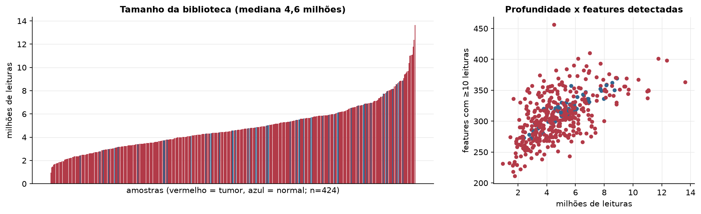
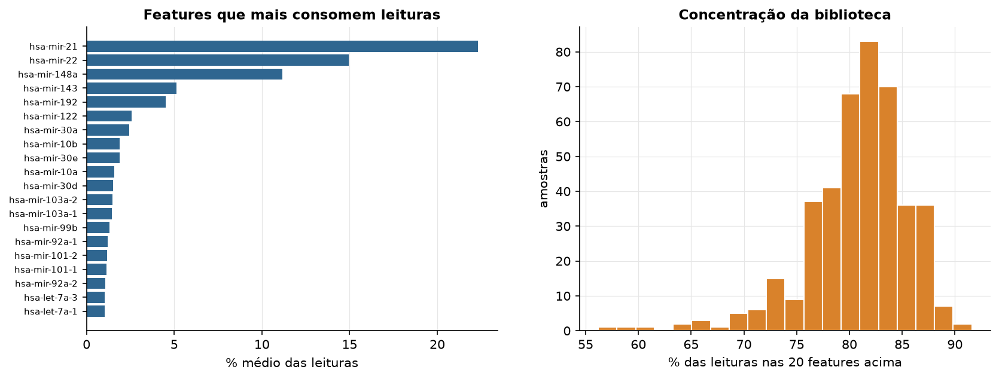
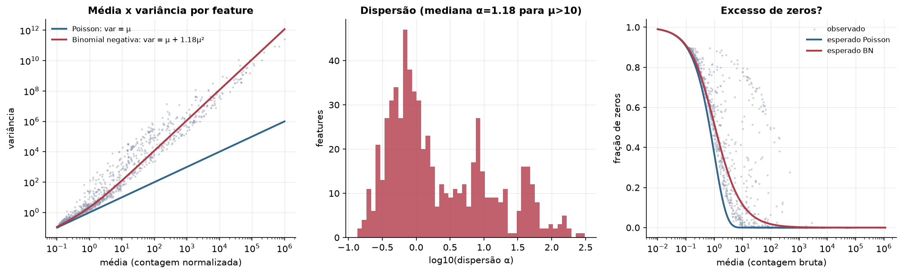
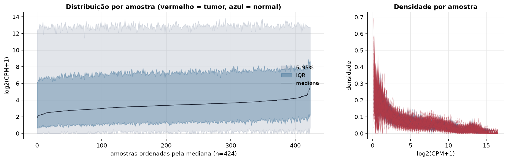
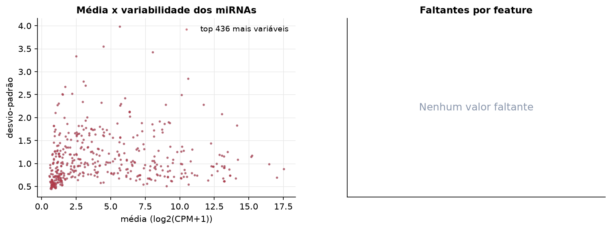
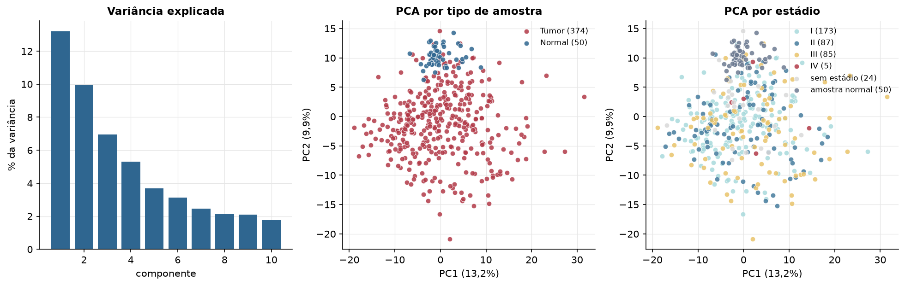
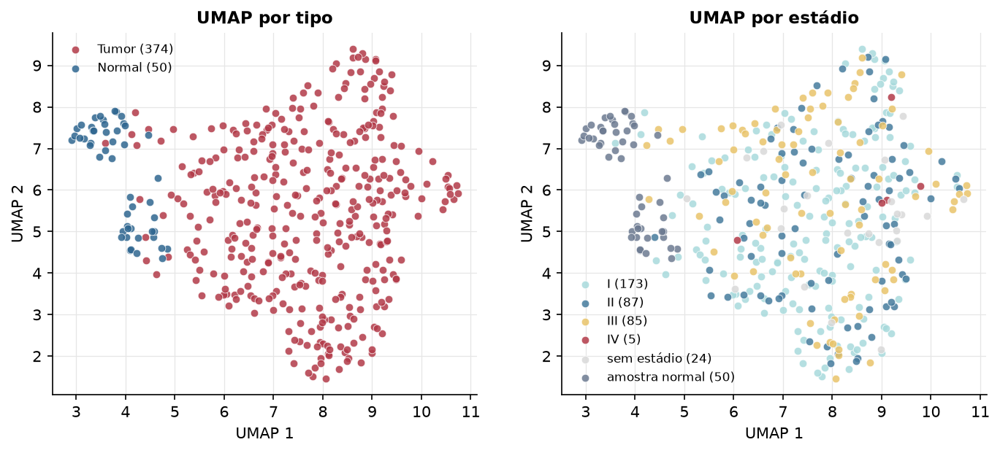
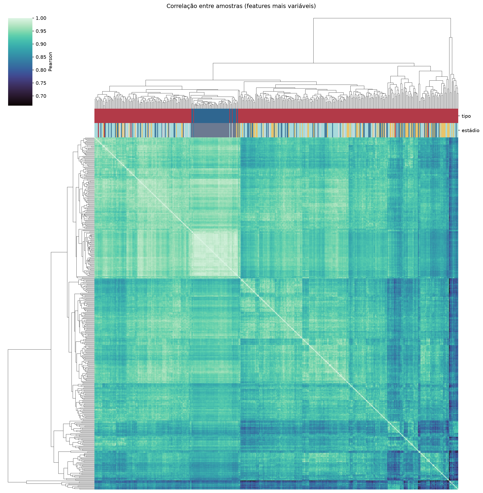
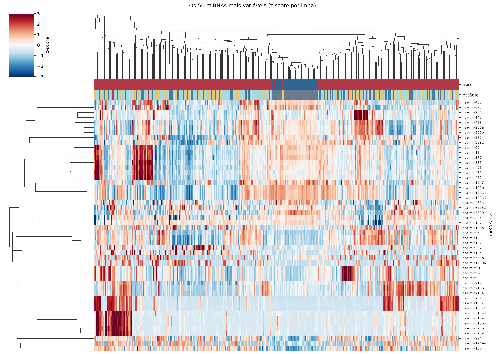
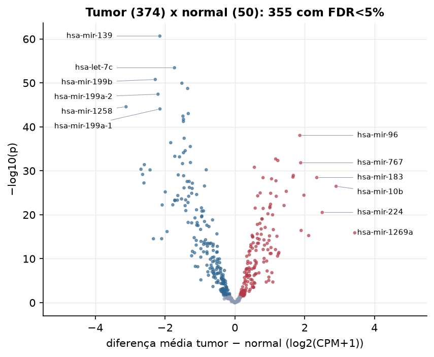

LIHC · miRNA-seq: contagens brutas (GDC)
BCGSC miRNA Profiling (miRBase v21) · gerado em 22/10/2026 00:21
4,6 Mtamanho mediano
1,18dispersão mediana α
436miRNAs
374amostras tumorais
50amostras normais
0,0%valores faltantes
Fonte: API do GDC (BCGSC miRNA Profiling)
Principais resultados
- Bibliotecas de 0,9 a 13,6 milhões de leituras (mediana 4,6). 1.023 de 1.881 features têm leitura em pelo menos 10% das amostras.
- A variância cresce bem acima da média: a dispersão mediana da binomial negativa é α=1.18 (para features com média > 10). Isso descarta um modelo Poisson e indica binomial negativa (ou Poisson-lognormal) na verossimilhança.
- A fração de zeros é compatível com a binomial negativa (diferença mediana -3,7%); inflação de zeros não parece necessária.
- Em média 81,5% das leituras de cada amostra vão para as 20 features mais abundantes.
- 436 miRNAs medidos em 424 amostras (374 tumorais e 50 normais); 0,0% dos valores estão faltando.
- Os dois primeiros componentes principais explicam 13,2% e 9,9% da variância das features mais variáveis.
- Correlação mediana entre amostras: 0,92.
- Amostras com correlação muito abaixo das demais (possíveis outliers técnicos): TCGA-BW-A5NQ-01, TCGA-BC-A69H-01, TCGA-CC-A7II-01, TCGA-DD-AADD-01, TCGA-DD-AAE6-01, TCGA-FV-A4ZQ-01.
- Tumor x normal: 355 miRNAs diferentes com FDR < 5% (154 maiores no tumor, 201 maiores no normal; 49 pacientes têm o par tumor-normal).
- Mais aumentados no tumor: hsa-mir-96, hsa-mir-589, hsa-mir-4746, hsa-mir-767, hsa-mir-3144, hsa-mir-105-2, hsa-mir-105-1, hsa-mir-183.
- Mais reduzidos no tumor: hsa-mir-139, hsa-let-7c, hsa-mir-199b, hsa-mir-99a, hsa-mir-125b-2, hsa-mir-199a-2, hsa-mir-1258, hsa-mir-199a-1.
- Associações clínicas com p < 0,05 nos componentes principais: PC1 com estádio (p=0.046); PC1 com sexo (p=0.00059); PC1 com idade (p=7.3e-05); PC2 com idade (p=0.029); PC1 com sobrevida (p=0.00033); PC2 com sobrevida (p=0.0011).
Biblioteca


Sobredispersão e zeros

Exploração em log2(CPM+1)
Features com CPM ≥ 1 em pelo menos 20% das amostras (436 features).
Distribuição dos valores


Estrutura das amostras




Tumor x normal

Features mais diferentes entre tumor e normal
| miRNA_ID | diferenca_tumor_menos_normal | t | p | fdr |
|---|---|---|---|---|
| hsa-mir-139 | -2.151 | -24.975 | 2.17e-61 | 9.48e-59 |
| hsa-let-7c | -1.731 | -20.59 | 3.55e-54 | 7.73e-52 |
| hsa-mir-199b | -2.282 | -19.082 | 1.64e-51 | 2.38e-49 |
| hsa-mir-99a | -1.518 | -18.081 | 1.15e-50 | 1.25e-48 |
| hsa-mir-125b-2 | -1.354 | -19.443 | 1.82e-49 | 1.59e-47 |
| hsa-mir-199a-2 | -2.203 | -18.13 | 3.65e-48 | 2.66e-46 |
| hsa-mir-1258 | -3.119 | -29.439 | 2.61e-45 | 1.63e-43 |
| hsa-mir-199a-1 | -2.147 | -17.294 | 8.3e-45 | 4.52e-43 |
| hsa-mir-125b-1 | -1.336 | -18.39 | 9.27e-44 | 4.49e-42 |
| hsa-mir-130a | -1.489 | -19.195 | 3.6e-43 | 1.57e-41 |
| hsa-mir-101-2 | -1.473 | -21.382 | 1.9e-42 | 7.53e-41 |
| hsa-mir-101-1 | -1.475 | -21.267 | 5.79e-42 | 2.1e-40 |
| hsa-mir-96 | 1.862 | 15.595 | 8.64e-39 | 2.9e-37 |
| hsa-mir-29c | -1.454 | -18.281 | 3.87e-38 | 1.2e-36 |
| hsa-mir-214 | -1.839 | -16.131 | 3.92e-37 | 1.14e-35 |
| hsa-mir-455 | -1.277 | -16.243 | 2.94e-36 | 8.02e-35 |
| hsa-mir-378c | -1.423 | -16.155 | 2.65e-35 | 6.79e-34 |
| hsa-mir-10a | -1.474 | -15.954 | 7.57e-35 | 1.83e-33 |
| hsa-mir-195 | -1.722 | -17.464 | 4.97e-34 | 1.14e-32 |
| hsa-mir-511 | -1.587 | -17.701 | 6.63e-34 | 1.44e-32 |
| hsa-mir-589 | 1.169 | 17.254 | 1.99e-33 | 4.12e-32 |
| hsa-mir-4746 | 1.231 | 15.926 | 4.56e-33 | 9.03e-32 |
| hsa-mir-497 | -1.274 | -15.761 | 1.3e-32 | 2.46e-31 |
| hsa-mir-767 | 1.886 | 13.076 | 1.47e-32 | 2.67e-31 |
| hsa-mir-326 | -1.501 | -17.06 | 2.26e-32 | 3.94e-31 |
| hsa-mir-424 | -2.595 | -20.686 | 4e-32 | 6.7e-31 |
| hsa-mir-3144 | 0.559 | 12.798 | 1.53e-31 | 2.48e-30 |
| hsa-mir-675 | -2.692 | -14.743 | 4.39e-31 | 6.83e-30 |
| hsa-mir-30a | -0.821 | -12.642 | 5.83e-31 | 8.76e-30 |
| hsa-mir-5589 | -2.431 | -15.636 | 6.15e-31 | 8.94e-30 |
Associação com variáveis clínicas
p-valores da associação dos três primeiros componentes principais (só tumores) com estádio (Kruskal-Wallis), sexo (Mann-Whitney), idade (Spearman) e sobrevida global (Cox univariado).
| estádio (Kruskal) | sexo (Mann-Whitney) | idade (Spearman) | sobrevida OS (Cox) | |
|---|---|---|---|---|
| PC1 (14,0%) | 0.045 | 0.000595 | 7.28e-05 | 0.000334 |
| PC2 (9,1%) | 0.276 | 0.994 | 0.029 | 0.001 |
| PC3 (5,7%) | 0.402 | 0.256 | 0.462 | 0.016 |